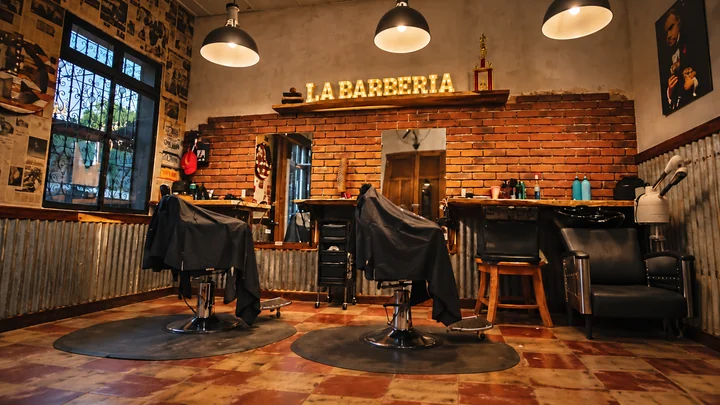
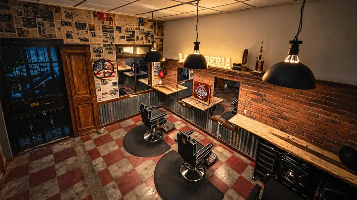
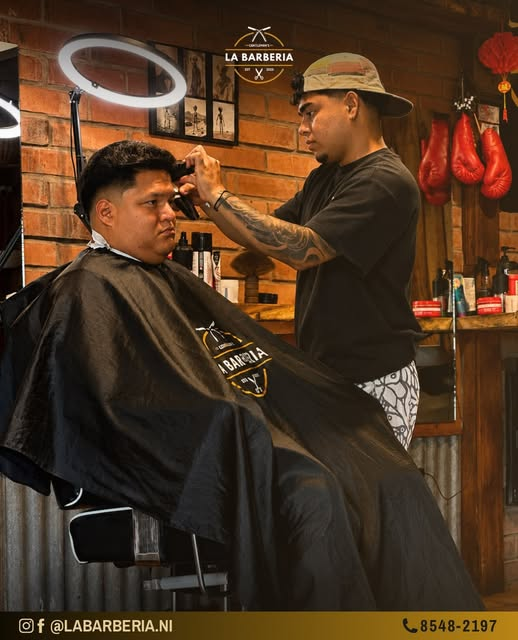
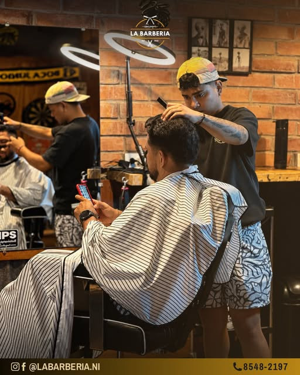

TU ESTILO. BIEN HECHO.
Un espacio para tu próximo corte.
Reservar citaDemo · servicios, precios y horarios ficticios.

EL LOCAL

DESDE LA SILLA
CORTES Y
RESEÑAS.
Dos momentos del trabajo, publicados por La Barbería. Tres voces tomadas de Google Maps.
Consultado el 3 de octubre de 2026. Los fragmentos destacados son positivos; no representan todas las opiniones. Las fotos no identifican a quienes escribieron las reseñas.
Arrastrá para explorar. En el móvil, deslizá de lado a lado. Con teclado, usá las flechas; Inicio vuelve al centro.
La exploración repite estas mismas 2 fotos y 3 reseñas. Fuentes completas debajo; fotos de cortes en proceso, sin alteración generativa.

RESEÑA DESTACADA · 5/5
Excelente lugar

RESEÑA DESTACADA · 5/5
Muy buena atención, excelentes cortes!!!!
RESEÑA DESTACADA · 5/5
toda una experiencia placentera
MASAYA · CAILAGUA
NOS VEMOS
EN EL LOCAL.
Supermercado Pali, 4 cuadras al oeste.Masaya 41000, Nicaragua. Cómo llegar
HORARIO
- Lunes
- 1:00–7:00 p. m.
- Martes
- Cerrado
- Miércoles
- 1:00–7:00 p. m.
- Jueves
- 1:00–7:00 p. m.
- Viernes
- 10:00 a. m.–7:00 p. m.
- Sábado
- 10:00 a. m.–7:00 p. m.
- Domingo
- 10:00 a. m.–5:00 p. m.
Hora de Nicaragua. Horario publicado en Google Maps, consultado el . Puede variar en días festivos; llamá antes de venir.
Para consultar una cita real, hablá con el negocio.
Consultar una cita real +505 8548 2197